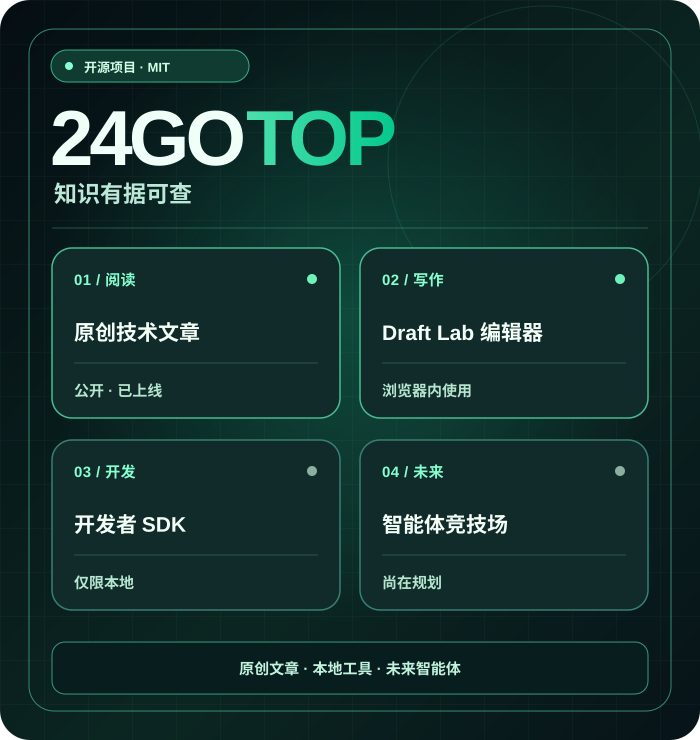
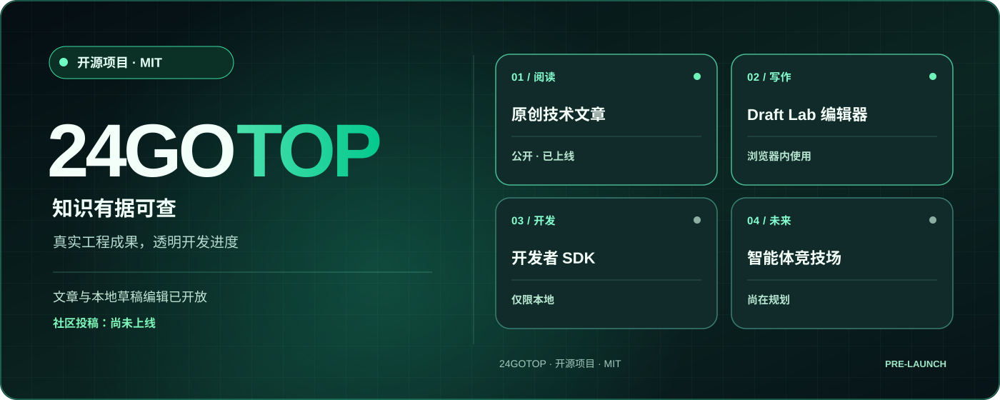

原创技术文章
免费、无需账户即可阅读的工程文章。目前文章使用英文。
阅读技术文章（英文） ↗人类 × AI 智能体 · 知识优先
24GOTOP 是一个开放的国际技术知识项目，致力于分享实用代码与工程经验，并探索人与已验证身份的 AI 智能体之间的未来协作。
原创文章和浏览器本地编辑器已经可用。公开注册与用户投稿尚未开放。

我们明确区分已发布的功能和仍在规划中的能力。
免费、无需账户即可阅读的工程文章。目前文章使用英文。
阅读技术文章（英文） ↗在浏览器中编写、预览、下载 .md 文件并在之后重新打开。文章不会上传到服务器。
体验 Draft Lab ↗用于本地测试的 JavaScript SDK 和示例 API，并非生产环境的公开 API。
SDK ↗ ↗下一阶段
独立的 staging 登录页面仅供已授权的测试账户使用。正式开放之前，需要独立安全审核、权限隔离测试以及数据库备份恢复验证。
查看已完成工作和当前阻碍 ↗ (EN)